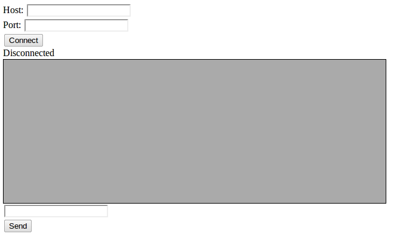

This is a tutorial that teaches how to use WebSocket. We will develop both sides, the web page and the server. The web page will consist of three files: HTML, JavaScript and CSS. The server side will be a program in Google's Go language.
There are many ways to create a web server that supports WebSocket, so I had to choose one. I could have done this in Ruby, Python, PHP, but I think the Go results in the simplest and probably close to the fastest way. It was also a good excuse for me to finally dive into learning Go.
I hope that the result will not be a program that is too hard to understand for a non-Go programmer. I will try to explain how it works, but for a bigger picture you should refer to one of the references on the web.
You should be able to read HTML, some very basic CSS and JavaScript. You should know some jQuery, because it is used to make the JavaScript simpler. You should be able to read Go. If you are not yet, know that it is easy to learn. In the next section you can see the references to sources I used to learn Go.
The author of this document is Aleksandar Janicijevic. Now is May 16, 2012. Here is Toronto, Canada.
Please forgive my bad HTML, CSS, JavaScript and Go (and English). I am no expert on these subjects, so feel free to take from this tutorial what you wish and make something better. That is what all tutorials are for.
For comments (good or bad), errors, typos, and suggestions, I can be contacted at aleks@ajanicij.info.
We are going to go through steps of developing a web application that uses WebSocket to connect to any service just like telnet does. The user sitting at browser can specify any host and port and the application will attempt connecting to that service. If the connection is established, the user will be able to send text messages to the service and see its response. As a test, we will demonstrate how to connect to a web server such as google.com and get the home page. We will also develop a very simple echo server (local to our web server) and connect to it.
As I am writing this, the software and standards I use are at the following versions:
First we will develop a basic web page without any support for WebSocket. It will not do much, but will demonstrate the basic structure of the page, script, style, and Go program that serves the page. Once we get these out of the way, we will be able to focus on the real subject of this tutorial, WebSocket.
Our directory structure (which will not change throughout the tutorial) is quite simple: Go code is in the root of the tree and HTML, CSS, and JavaScript files are in subdirectories html, css, and script respectively.
/ css/ style.css html/ index.html script/ jquery-1.7.2.js wstelnet.js wstelnet.go |
We will make this file will all sections that we will need for the telnet application, although they will not become functional until we add WebSocket support.
<html> <head> <title>WebSocket tutorial</title> <link rel="stylesheet" type="text/css" href="css/style.css"/> <script type="text/JavaScript" src="script/jquery-1.7.2.js"></script>
<script type="text/JavaScript" src="script/wstelnet.js"> </script> </head> <body> <div id="connect"> <div>Host: <input type="text" value="" name="host" id="host"/></div> <div>Port: <input type="text" value="" name="port" id="port"/></div> <div> <input type="button" value="Connect" id="connect-button" /> <div id="status"> Disconnected </div> </div> </div> <div id="console"> </div> <div id="input-box"> <div><input type="text" value="" name="command" id="command"/></div> <div><input type="button" value="Send" id="send-button" /></div> </div> </body> </html> |
Here’s what it looks like in Chrome:

This file is very simple:
#console { background-color: #aaaaaa; width: 40em; height: 15em; overflow: auto; border: 1px solid; } .output { color: blue; } |
We only define two styles:
The script is also simple and for now doesn’t do much:
var host; var port; var service; // host:port $(function () {
$("#connect-button").click(function () { alert("You clicked 'Connect'"); SetStatus("Connecting"); });
function SetStatus(str) { $("#status").text(str); } function htmlEncode(value){ return $('<div/>').text(value).html(); } function SendMessage(message) { SetStatus("Sending message: " + message); console.log("Sending message: " + message); $("#command").val(""); $("#console").append("<div class=\"output\">" + htmlEncode(message) + "</div>"); }
$("#send-button").click(function () { var message = $("#command").val(); SendMessage(message); });
$("#command").keypress(function (event) { if (event.which == 13) { // Enter key var message = $("#command").val(); SendMessage(message); } }); }); |
This code does not yet connect to anything. It reacts to clicks to Connect and Send and to the user pressing Enter in the input element with id=command. We will add functionality in the next section.
The Go program that runs on the server side is this:
package main import ( "fmt" "net/http" "os" ) func main() { if len(os.Args) != 2 { fmt.Println("Usage: wstelnet port") os.Exit(0) }
port := os.Args[1] fmt.Println("Serving web on port", port) service := ":" + port
http.Handle("/script/", http.FileServer(http.Dir("."))) http.Handle("/css/", http.FileServer(http.Dir("."))) http.Handle("/", http.FileServer(http.Dir("./html/"))) err := http.ListenAndServe(service, nil) checkError(err) } func checkError(err error) { if err != nil { fmt.Println("Fatal error ", err.Error()) os.Exit(1) } } |
This code reads port number from the command line, sets up handlers for serving scripts, CSS and HTML files and runs HTTP server. I made the port configurable by the user, because the standard port 80 for HTTP may be used already by the machine’s web server and because the user’s account would require administrator privileges to listen on port 80 anyway.
Now we will add the functionality to serve web sockets. The HTML file that we wrote for the first phase will not change at all. The change is in the script on the client (browser) side and in the Go program on the server side.
When the user clicks on Connect button, we create a WebSocket object:
ws = new WebSocket("ws://localhost:8000/websocket/ws");
This call will cause the browser to try to establish a web socket with the server. Since this happens asynchronously, the browser will communicate with our script through callbacks. For the WebSocket object, there are four standard callbacks that our script has to implement: onopen, onerror, onmessage, and onclose.
Since we use a web socket to communicate with a server that provides some service, there will always be a protocol that defines the communication between the browser and the server. In our case this protocol is very simple: the first message the script sends on an open web socket is the host and port that our server should connect to: for example, yahoo.com:80. Then the server tries to connect to the remote host and sends back string “SUCC” if successful and “FAIL:<reason>” otherwise. Our JavaScript script will watch for this response. If it sees “SUCC” then the connect was successful and for the rest of the life of the web socket it sends messages to and receives them from the remote host.
Let’s see how this is implemented in the script. First, there is global variable status that keeps the status of the web socket:
var status; // "DISCONNECTED", "CONNECTING", "CONNECTED"
In the code that follows we use function SetStatus to set the status text:
function SetStatus(str) { $("#status").text(str); } |
Now we show the four callbacks of the WebSocket object:
ws.onopen = function (event) {
console.log("onopen: service=" + service);
SetStatus("Connecting");
status = "CONNECTING";
ws.send(service);
}
After the web socket is open, the script sets status to “CONNECTING” and sends service (host:port).
ws.onerror = function (event) {
console.log("onerror");
status = "DISCONNECTED";
ws.close();
ws = null;
}
In case of and error, we set status to “DISCONNECTED”, close the web socket and set ws to null.
ws.onmessage = function (event) {
if (status == "CONNECTED") {
console.log("onmessage: " + event.data);
$("#console").append("<div>" + htmlEncode(event.data) + "</div>");
} else {
if (event.data == "SUCC") {
status = "CONNECTED";
SetStatus("Connected");
} else {
status = "DISCONNECTED";
SetStatus("Disconnected: " + event.data);
ws.close();
ws = null;
}
}
}
If status is “CONNECTED”, the connection with the remote host has been established and the message we recived via the call of onmessage is just appended to the contents of the element with id=”console”.
Otherwise, the status is “CONNECTING” and the script has to check if the received message is “SUCC”. If so, the connection has just been established and we set status to “CONNECTED”. If not, then the message will follow the pattern “FAIL:reason” where reason is the error string (we will see where this comes from on the Go server side). This message is written to the status line, status is set to “DISCONNECTED” and we close the web socket and set ws to null.
ws.onclose = function (event) {
console.log("onclose");
SetStatus("Disconnected");
status = "DISCONNECTED";
ws.close();
ws = null;
}
This code should by now be clear: if the server closed the connection, we set the status to “DISCONNECTED”, close our side of the web socket and set ws to null.
We send messages to the web socket server by calling function SendMessage:
function SendMessage(message) { console.log("Sending message: " + message); ws.send(message); $("#command").val("");
var dom = $("<div>"); dom.find("div").append(message);
$("#console").append("<div class=\"output\">" + htmlEncode(message) + "</div>"); } |
In addition to sending message by calling ws.send(message), this function also appends the message to the contents of console area (and sets the class of the appended div to output, which will render it in blue color).
Function SendMessage is call from two locations: when the user clicks on the Send button and when the user presses Enter in the input box:
$("#send-button").click(function () { var message = $("#command").val(); SendMessage(message); });
$("#command").keypress(function (event) { if (event.which == 13) { // Enter key var message = $("#command").val(); SendMessage(message); } }); |
Here is the complete wstelnet.js file:
var ws; // WebSocket connection var conn; // TCP connection var host; var port; var service; // host:port var status; // "DISCONNECTED", "CONNECTING", "CONNECTED" $(function () { $("#connect-button").click(function () { status = "DISCONNECTED"; host = $("#host").val(); port = $("#port").val(); if ((port == null) || (port == "")) { port = "80"; } if (ws != null) { ws.close(); } service = host + ":" + port; ws = new WebSocket("ws://localhost:8000/websocket/ws"); if (ws == null) { console.log("WebSocket creation failed"); return; } else { console.log("WebSocket creation succeeded"); } $("#console").text(""); ws.onopen = function (event) { console.log("onopen: service=" + service); SetStatus("Connecting"); status = "CONNECTING"; ws.send(service); } ws.onerror = function (event) { console.log("onerror"); status = "DISCONNECTED"; ws.close(); ws = null; } ws.onmessage = function (event) { if (status == "CONNECTED") { console.log("onmessage: " + event.data); $("#console").append("<div>" + htmlEncode(event.data) + "</div>"); } else { if (event.data == "SUCC") { status = "CONNECTED"; SetStatus("Connected"); } else { status = "DISCONNECTED"; SetStatus("Disconnected: " + event.data); ws.close(); ws = null; } } } ws.onclose = function (event) { console.log("onclose"); SetStatus("Disconnected"); status = "DISCONNECTED"; ws.close(); ws = null; } });
function SetStatus(str) { $("#status").text(str); }
function htmlEncode(value){ return $('<div/>').text(value).html(); } function SendMessage(message) { console.log("Sending message: " + message); ws.send(message); $("#command").val("");
var dom = $("<div>"); dom.find("div").append(message); console.log("SendMessage: dom is " + dom.html());
$("#console").append("<div class=\"output\">" + htmlEncode(message) + "</div>"); }
$("#send-button").click(function () { var message = $("#command").val(); SendMessage(message); });
$("#command").keypress(function (event) { if (event.which == 13) { // Enter key var message = $("#command").val(); SendMessage(message); } }); }); |
The Go code has to handle a web socket. First, we register the handler:
http.Handle("/websocket/", websocket.Handler(ProcessSocket))
The function ProcessSocket is as follows:
func ProcessSocket(ws *websocket.Conn) { fmt.Println("In ProcessSocket") var msg string err := websocket.Message.Receive(ws, &msg) if err != nil { fmt.Println("ProcessSocket: got error", err) _ = websocket.Message.Send(ws, "FAIL:" + err.Error()) return } fmt.Println("ProcessSocket: got message", msg) service := msg
tcpAddr, err := net.ResolveTCPAddr("tcp", service) if err != nil { fmt.Println("Error in ResolveTCPAddr:", err) _ = websocket.Message.Send(ws, "FAIL:" + err.Error()) return }
conn, err := net.DialTCP("tcp", nil, tcpAddr) if err != nil { fmt.Println("Error in DialTCP:", err) _ = websocket.Message.Send(ws, "FAIL:" + err.Error()) return }
_ = websocket.Message.Send(ws, "SUCC") RunTelnet(ws, conn) } |
This function receives the service string from the JavaScript script, which it expects to be in the form host:port. It resolves the host name and establishes a TCP connection. If any of these steps fails, the function send back the string “FAIL:<reason>” (where the reason is the result of err.Error()) and exits. If everything is successful, it calls RunTelnet.
NOTE: When you implement a web socket handler function, keep in mind that this function has to be running for the duration of the life of the web socket. When this function exits, the web socket is closed. For example, this is what tripped me up: the handler cannot create a goroutine that processes the web socket and then exit, because after it exits the web socket will get closed and the goroutine will try to use an invalid web socket handle.
Function RunTelnet starts a goroutine that will read from TCP socket and write to web socket. After that, RunTelnet runs a loop in which it reads from web socket and write to TCP socket. As mentioned in the last note, it would not work if RunTelnet just started two goroutines that serve the two directions of data transfer and then exited.
func RunTelnet(ws *websocket.Conn, conn *net.TCPConn) { fmt.Println("Running telnet") go ReadSocket(ws, conn)
// Read websocket and write to socket. crlf := []byte{13, 10} var msg string for { err := websocket.Message.Receive(ws, &msg) if err != nil { _ = conn.Close() break } _, err = conn.Write([]byte(msg)) if err != nil { break } fmt.Println("Sent message to host:", msg) // Send \r\n (as HTTP protocol requires) _, err = conn.Write(crlf) if err != nil { break } } fmt.Println("RunTelnet exit") } |
Note how RunTelnet actually sends two messages to the remote host: the text received from the script and CR-LF (new line). We need this, because we will want to connect to HTTP servers, which expect every line to be terminated with CR-LF.
What is left is the function ReadSocket:
func ReadSocket(ws *websocket.Conn, conn *net.TCPConn) { reader := bufio.NewReader(conn) var line string = "" for { if reader == nil { break } buffer, isPrefix, err := reader.ReadLine() if err != nil { break } // fmt.Println("ReadSocket: got", len(buffer), "bytes") line = line + string(buffer) if !isPrefix { // fmt.Println("Sending message to web socket:", line) err = websocket.Message.Send(ws, line) if err != nil { _ = conn.Close() } line = "" } } fmt.Println("ReadSocket exit") ws.Close() } |
This function reads a line from the TCP socket in a loop and sends it to the web socket.
For reading a line, we use Reader interface defined in the package bufio, which collects a line. We don’t know in advance how long the line is going to be, so one of the three returned values of ReadLine is boolean isPrefix. If it is false, we know that we have collected the whole line and send it to the web socket.
Note what happens if we detect that the remote host has closed the socket (which will always be the case with HTTP 1.0): reader.ReadLine() returns error (err != nil). We break out of the loop and close the web socket. This in turn will cause the call of ws.Message.Receive in RunTelnet to return an error and RunTelnet will exit.
Here is the whole code of wstelnet.go:
package main import ( "fmt" "net/http" "os" "code.google.com/p/go.net/websocket" "bufio" "net" ) func main() { if len(os.Args) != 2 { fmt.Println("Usage: wstelnet port") os.Exit(0) }
port := os.Args[1] fmt.Println("Serving web on port", port) service := ":" + port
http.Handle("/script/", http.FileServer(http.Dir("."))) http.Handle("/css/", http.FileServer(http.Dir("."))) http.Handle("/", http.FileServer(http.Dir("./html/"))) http.Handle("/websocket/", websocket.Handler(ProcessSocket)) err := http.ListenAndServe(service, nil) checkError(err) } func ProcessSocket(ws *websocket.Conn) { fmt.Println("In ProcessSocket") var msg string err := websocket.Message.Receive(ws, &msg) if err != nil { fmt.Println("ProcessSocket: got error", err) _ = websocket.Message.Send(ws, "FAIL:" + err.Error()) return } fmt.Println("ProcessSocket: got message", msg) service := msg
tcpAddr, err := net.ResolveTCPAddr("tcp", service) if err != nil { fmt.Println("Error in ResolveTCPAddr:", err) _ = websocket.Message.Send(ws, "FAIL:" + err.Error()) return }
conn, err := net.DialTCP("tcp", nil, tcpAddr) if err != nil { fmt.Println("Error in DialTCP:", err) _ = websocket.Message.Send(ws, "FAIL:" + err.Error()) return }
_ = websocket.Message.Send(ws, "SUCC") RunTelnet(ws, conn) } func RunTelnet(ws *websocket.Conn, conn *net.TCPConn) { fmt.Println("Running telnet") go ReadSocket(ws, conn)
// Read websocket and write to socket. crlf := []byte{13, 10} var msg string for { err := websocket.Message.Receive(ws, &msg) if err != nil { _ = conn.Close() break } _, err = conn.Write([]byte(msg)) if err != nil { break } fmt.Println("Sent message to host:", msg) // Send \r\n (as HTTP protocol requires) _, err = conn.Write(crlf) if err != nil { break } } fmt.Println("RunTelnet exit") } // Read from socket and write to websocket func ReadSocket(ws *websocket.Conn, conn *net.TCPConn) { reader := bufio.NewReader(conn) var line string = "" for { if reader == nil { break } buffer, isPrefix, err := reader.ReadLine() if err != nil { break } // fmt.Println("ReadSocket: got", len(buffer), "bytes") line = line + string(buffer) if !isPrefix { // fmt.Println("Sending message to web socket:", line) err = websocket.Message.Send(ws, line) if err != nil { _ = conn.Close() } line = "" } } fmt.Println("ReadSocket exit") ws.Close() } func checkError(err error) { if err != nil { fmt.Println("Fatal error ", err.Error()) os.Exit(1) } } |
Let’s see how we can use this code to connect to a web server.
In order to show that this way we can connect to any server that exchanges text messages over TCP, we can use a simple Go application that echoes received messages back to the client. If it receives a text message that starts with “quit,” it will close the connection. That will enable us to experiment with different scenarios.
Here’s the whole code. It is very simple:
package main import ( "fmt" "os" "net" ) func main() { fmt.Println("hello responder") fmt.Println("you supplied", len(os.Args), "arguments") if len(os.Args) != 2 { fmt.Println("Usage: responder <port>") os.Exit(0) } port := os.Args[1] fmt.Println("Port:", port)
service := ":" + port tcpAddr, err := net.ResolveTCPAddr("ip4", service) checkError(err) fmt.Println("Resolved TCP address for the service")
listener, err := net.ListenTCP("tcp", tcpAddr) checkError(err)
for { conn, err := listener.AcceptTCP() if err != nil { continue }
go ServeSocket(conn) } } func ServeSocket(conn *net.TCPConn) { fmt.Println("In ServeSocket") for { var buffer [512]byte n, err := conn.Read(buffer[:]) if err != nil { break } message := string(buffer[:n]) fmt.Println("Got message:", message) if message[:4] == "quit" { break } _, err = conn.Write([]byte(message)) if err != nil { break } } conn.Close() fmt.Println("Connection closed") } func checkError(err error) { if err != nil { fmt.Fprintf(os.Stderr, "Fatal error: %s", err.Error()) os.Exit(1) } } |
We start the echo server with a command like this:
go run echoserver.go 4000
and, assuming that it is running on the same machine as the web server, we connect to it from the web page by specifying host localhost and port 4000. Then we can type messages in the input box and after we press Enter see them echoed. When we want to finish, we type “quit” (without quotes) and press Enter and we see the status line changed to “Disconnected.”
We don’t have a disconnect button on the web page. Add that button and the code in the script that will close the web socket when the user clicks on the button.